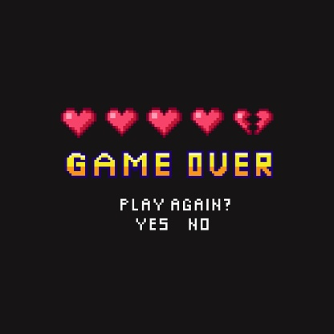

Initial Death Handling is just the systems handling of the Playable characters death. In the event that the player characters health reaches zero, the player gets brought to the “Death Screen” where he will get score of their current playthrough and the choice to restart the game or from the last checkpoint the player has triggered. The Initial Death Handling of the player should be concise and intuitive, so the player will keep trying again after a fail. This is because the consequence of death means very little except a restart to the last checkpoint, which will encourage the player to keep trying again as the in-game characters death is a minor setback. Since this mechanic is strongly tied to the Health Bar Mechanic, it must be designed and implemented first before work on the Death Handling system can start.
The design of the Death Handling System needed to be carefully considered as it will servery effect the difficulty of the game, and the incorrect system could leave a bad impression on users and cause them to stop playing the game. In almost every game with a user played character, there are two main ways the game system deals with player death. The first method is the “hardcore/ironman death” meaning, the player will lose all progress completely and restart from the start. The second is the “checkpoint death” method, where the player is sent back to the last checkpoint, they have triggered losing all progress they had from the checkpoint to where they died. As “Plunderer” is a completely platforming game with considerable difficulty, the use of the “hardcore/ironman death” method, could cause the player to find the consequence of death too punishing, thus putting them off the game. Since that is the case we decided to go with the “checkpoint death” system as this allows us to make the level design and obstacles much more punishing without the user finding the game too difficult.
As a Player of the game “Plunderer”, I need to avoid getting my health reduced to Zero by the obstacles in the level in order to achieve my current objective.
As a Player of the game “Plunderer”, I need to avoid getting my health reduced to Zero by the obstacles in the level in order to achieve my current objective. This means that the successful implementation of the Initial Death Handling, can be validated by the player being reset and brought to the death screen when their health bar reaches zero.